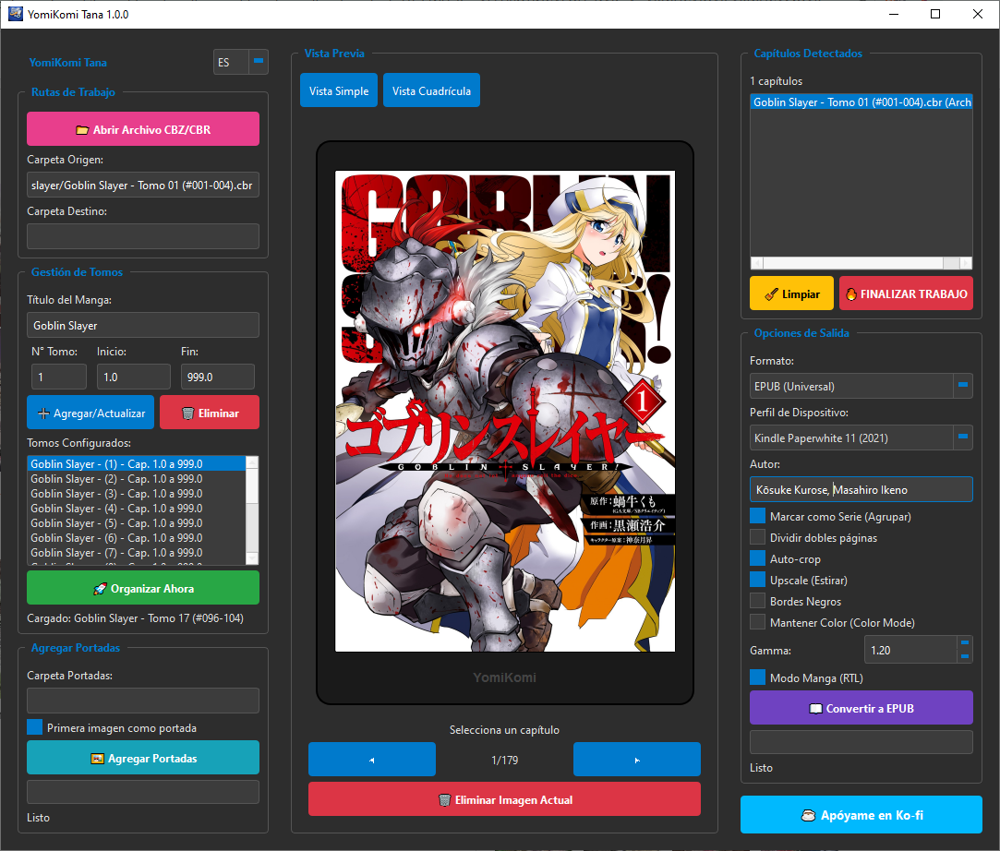

Auto-crop inteligente
Recorta bordes blancos o negros para que cada pagina use mejor la pantalla.

Freeware para Windows 10 y 11
Convierte manga, comics y webtoons locales en tomos digitales listos para Kindle, Kobo y tablets. Recorta margenes, divide paginas dobles y exporta a EPUB o CBZ sin subir tus archivos a internet.
Optimizado para lectura digital
La aplicacion esta pensada para colecciones locales: abre archivos grandes, detecta capitulos, prepara portadas y ajusta imagenes para pantallas E-Ink o tablets.
Recorta bordes blancos o negros para que cada pagina use mejor la pantalla.
Separa escaneos horizontales en paginas verticales mas comodas para leer.
Corta tiras largas de scroll en paginas individuales y ordenadas.
Configura EPUB de derecha a izquierda para mantener el sentido original.
Ajustes para Kindle, Kobo y otros lectores con control de gamma y color.
Tus archivos se procesan en tu equipo, ideal para bibliotecas privadas.
Flujo de trabajo
Importa ZIP, RAR, CBZ, CBR o una carpeta con paginas sueltas.
Detecta capitulos, define rangos y prepara metadatos del manga.
Activa recorte, division, gamma, color, portada y lectura RTL.
Genera EPUB para e-readers o CBZ para tablets y visores de comics.
Interfaz real
La vista previa permite comprobar portada, paginas detectadas, capitulos y opciones de salida antes de iniciar el trabajo final.

Version actual
Disponible como instalador para Windows. El ejecutable fue pensado para usuarios que solo quieren abrir la app y convertir su biblioteca sin configurar Python.
Nota: Windows puede mostrar una alerta de aplicacion desconocida en proyectos nuevos compilados con PyInstaller.
Repositorio mas sano
Esta carpeta incluye una base de GitHub mas ordenada: plantillas de issues, pull requests, workflow de Pages, changelog y una guia de contribucion.
Publica esta web estatica desde Actions sin instalar dependencias.
Separacion entre bugs y solicitudes de funciones para recibir reportes utiles.
Guia de ramas, commits y releases para que el proyecto crezca sin ruido.